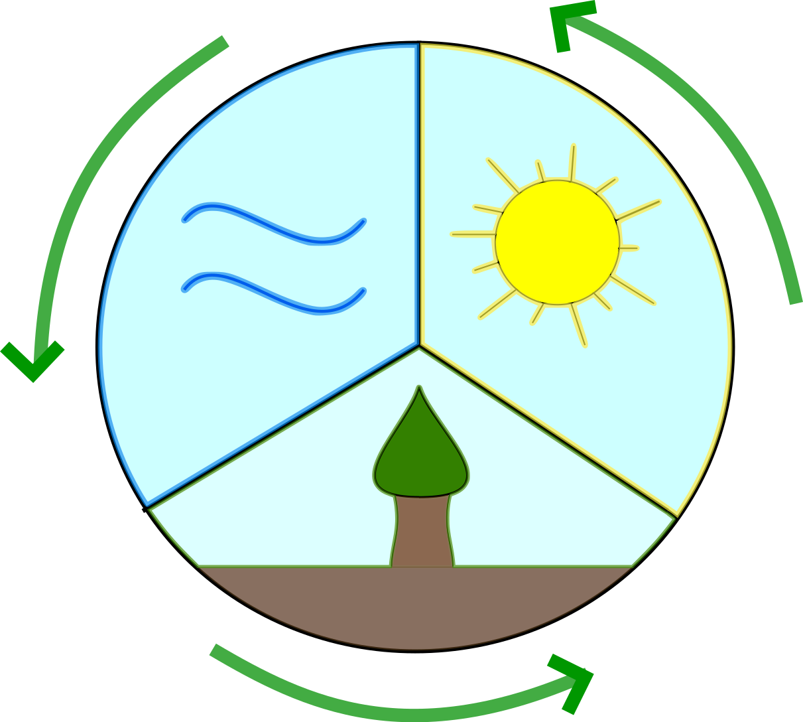

Energia Odnawialna
Prawie cała wytwarzana energia
pochodzi z paliw kopalnych:
węgla, ropy i gazu.
W procesie spalania powstają pyły,
dwutlenek węgla, dwutlenek siarki i tlenki azotu.
Powodują powstawanie wielu niekorzystnych zjawisk,
m.in. kwaśnych deszczy i ocieplanie się klimatu.
Żeby zmniejszyć zanieczyszczenie środowiska,
musimy zredukować zużycie paliw kopalnych.
Odnawialne źródła energii to zasoby naturalne,
które pomimo stałego zużywania powstają na nowo,
ponieważ procesy ich wytwarzania
trwają krótko i nadal istnieją warunki,
by zachodziły one w przyrodzie.
Do zasobów odnawialnych
należą wszystkie żywe składniki przyrody.
Człowiek nauczył sie wykorzystywać te żródła
by przekształcać je w energie.
Odnawialne źródła energii to między innymi:
Biomasa,
Energetyka słoneczna,
Energia Wiatru
Jolanta Nowak Mateusz Pazdziora 3F